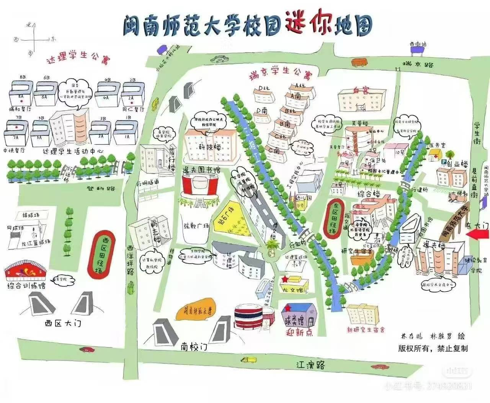

xian<!DOCTYPE html>
<html lang="zh-CN">
<head>
<meta charset="UTF-8">
<meta name="viewport" content="width=device-width, initial-scale=1.0">
<title>闽师小羽学长 - AI智能校园助手 | 闽南师范大学</title>
<style>
/* ===== Reset & Base ===== */
*,*::before,*::after{box-sizing:border-box;margin:0;padding:0}
html{scroll-behavior:smooth;font-size:16px}
body{
  font-family:-apple-system,BlinkMacSystemFont,"Segoe UI","PingFang SC","Hiragino Sans GB","Microsoft YaHei",sans-serif;
  background:#f0ebe3;
  color:#3d3226;
  line-height:1.6;
  min-height:100vh;
  -webkit-font-smoothing:antialiased;
}
a{text-decoration:none;color:inherit}

/* ===== 闽南风格装饰背景 ===== */
body::before{
  content:'';
  position:fixed;top:0;left:0;width:100%;height:100%;
  background:
    radial-gradient(ellipse at 0% 0%, rgba(196,30,58,0.04) 0%, transparent 60%),
    radial-gradient(ellipse at 100% 100%, rgba(180,140,80,0.06) 0%, transparent 60%),
    radial-gradient(ellipse at 50% 20%, rgba(196,30,58,0.03) 0%, transparent 50%);
  pointer-events:none;z-index:0;
}

.container{max-width:720px;margin:0 auto;padding:0 16px;position:relative;z-index:1}

/* ===== 顶部导航条 ===== */
.top-bar{
  background:linear-gradient(135deg,#8B1A2B 0%,#A8203A 40%,#C41E3A 100%);
  color:#fff;padding:8px 16px;font-size:12px;text-align:center;
  position:sticky;top:0;z-index:100;
  box-shadow:0 2px 12px rgba(139,26,43,0.25);
  display:flex;align-items:center;justify-content:center;gap:8px;
}
.top-bar .badge{
  display:inline-block;background:rgba(255,255,255,0.2);border-radius:20px;
  padding:2px 10px;font-size:11px;letter-spacing:0.5px;
}
.top-bar .badge::before{content:'🤖 '}

/* ===== Header ===== */
.header{
  background:linear-gradient(180deg, #8B1A2B 0%, #B22234 60%, #f0ebe3 100%);
  color:#fff;text-align:center;padding:40px 20px 60px;position:relative;overflow:hidden;
}
.header::before{
  content:'';position:absolute;top:0;left:0;width:100%;height:100%;
  background-image: repeating-linear-gradient(
    45deg, transparent, transparent 20px, rgba(255,255,255,0.015) 20px, rgba(255,255,255,0.015) 40px
  );
}
.header::after{
  content:'';position:absolute;bottom:0;left:0;width:100%;height:60px;
  background:linear-gradient(to bottom, transparent, #f0ebe3);
}
.header-content{position:relative;z-index:1}
.header .logo-icon{
  width:72px;height:72px;background:rgba(255,255,255,0.15);
  border-radius:20px;display:inline-flex;align-items:center;justify-content:center;
  font-size:36px;margin-bottom:16px;
  backdrop-filter:blur(10px);border:2px solid rgba(255,255,255,0.2);
  box-shadow:0 8px 32px rgba(0,0,0,0.15);
}
.header h1{
  font-size:26px;font-weight:700;margin-bottom:6px;letter-spacing:1px;
  text-shadow:0 2px 8px rgba(0,0,0,0.2);
}
.header .subtitle{
  font-size:14px;opacity:0.9;display:flex;align-items:center;justify-content:center;gap:16px;
}
.header .subtitle span{display:inline-flex;align-items:center;gap:4px}
.header .subtitle span::before{content:'✦';font-size:10px;color:#FFD700}

/* 闽南燕尾脊装饰 */
.minnan-ridge{
  position:absolute;top:0;left:50%;transform:translateX(-50%);
  width:200px;height:40px;
  background:linear-gradient(to bottom, rgba(255,255,255,0.08), transparent);
  clip-path:polygon(50% 0%, 0% 100%, 15% 60%, 35% 100%, 50% 40%, 65% 100%, 85% 60%, 100% 100%);
}

/* ===== 搜索框 ===== */
.search-wrap{padding:0 16px;margin-top:-28px;position:relative;z-index:10}
.search-box{
  background:#fff;border-radius:16px;padding:4px;display:flex;align-items:center;
  box-shadow:0 4px 24px rgba(0,0,0,0.08), 0 1px 4px rgba(0,0,0,0.04);
  border:1px solid #e8ddd0;
}
.search-box input{
  flex:1;border:none;outline:none;padding:12px 16px;font-size:15px;
  background:transparent;color:#3d3226;
}
.search-box input::placeholder{color:#bba98b}
.search-box button{
  background:linear-gradient(135deg,#C41E3A,#A8203A);
  color:#fff;border:none;border-radius:12px;padding:10px 20px;font-size:14px;
  cursor:pointer;font-weight:600;white-space:nowrap;
  transition:all 0.2s;
}
.search-box button:hover{transform:scale(1.03);box-shadow:0 4px 16px rgba(196,30,58,0.3)}
.search-box button:active{transform:scale(0.97)}

/* ===== 快捷提问 ===== */
.section{margin:24px 0}
.section-title{
  font-size:17px;font-weight:700;margin-bottom:12px;display:flex;align-items:center;gap:8px;
  color:#5D3A1A;
}
.section-title::before{
  content:'';width:4px;height:20px;background:linear-gradient(180deg,#C41E3A,#E85D75);
  border-radius:2px;
}
.quick-btns{display:flex;flex-wrap:wrap;gap:10px}
.quick-btn{
  flex:1;min-width:calc(50% - 5px);padding:12px 8px;border-radius:12px;
  border:1px solid #e8ddd0;background:#fff;font-size:14px;cursor:pointer;
  text-align:center;transition:all 0.2s;color:#5D3A1A;
  box-shadow:0 2px 8px rgba(0,0,0,0.03);
}
.quick-btn:hover{background:#fdf5f5;border-color:#C41E3A;color:#C41E3A;transform:translateY(-1px);box-shadow:0 4px 16px rgba(196,30,58,0.1)}
.quick-btn:active{transform:scale(0.97)}
.quick-btn .icon{display:block;font-size:22px;margin-bottom:4px}

/* ===== 热门问题 ===== */
.hot-list{display:flex;flex-direction:column;gap:8px}
.hot-item{
  background:#fff;border-radius:12px;padding:14px 16px;display:flex;align-items:center;gap:12px;
  cursor:pointer;border:1px solid #e8ddd0;transition:all 0.2s;
  box-shadow:0 2px 8px rgba(0,0,0,0.03);
}
.hot-item:hover{background:#fdf5f5;border-color:#C41E3A;transform:translateX(4px)}
.hot-item .rank{
  width:28px;height:28px;border-radius:8px;display:flex;align-items:center;justify-content:center;
  font-size:13px;font-weight:700;flex-shrink:0;color:#fff;
}
.hot-item:nth-child(1) .rank{background:linear-gradient(135deg,#C41E3A,#E85D75)}
.hot-item:nth-child(2) .rank{background:linear-gradient(135deg,#D4842A,#E8A84C)}
.hot-item:nth-child(3) .rank{background:linear-gradient(135deg,#B8860B,#DAA520)}
.hot-item:nth-child(4) .rank{background:linear-gradient(135deg,#8B6F47,#A68B5B)}
.hot-item:nth-child(5) .rank{background:linear-gradient(135deg,#7B5B3A,#9B7B5A)}
.hot-item .hot-text{flex:1;font-size:14px;font-weight:500}
.hot-item .hot-arrow{color:#c4a97d;font-size:14px}

/* ===== 分类板块 ===== */
.category-grid{display:flex;flex-direction:column;gap:12px}
.category-card{
  background:#fff;border-radius:16px;overflow:hidden;
  border:1px solid #e8ddd0;transition:all 0.2s;
  box-shadow:0 2px 12px rgba(0,0,0,0.04);
}
.category-card.active{border-color:#C41E3A;box-shadow:0 4px 20px rgba(196,30,58,0.08)}
.category-header{
  padding:16px 20px;display:flex;align-items:center;gap:12px;cursor:pointer;
  transition:background 0.2s;user-select:none;
}
.category-header:hover{background:#fdf5f5}
.category-icon{
  width:42px;height:42px;border-radius:12px;display:flex;align-items:center;justify-content:center;
  font-size:20px;flex-shrink:0;
}
.category-icon.c1{background:#FFF0F0;color:#C41E3A}
.category-icon.c2{background:#FFF8EB;color:#D4842A}
.category-icon.c3{background:#EBF5FF;color:#2B6CB0}
.category-icon.c4{background:#F0FFF0;color:#2D8B4E}
.category-icon.c5{background:#F5F0FF;color:#6B3FA0}
.category-icon.c6{background:#FFF5EB;color:#C4782A}
.category-info{flex:1}
.category-name{font-size:15px;font-weight:700;color:#3d3226}
.category-count{font-size:12px;color:#bba98b;margin-top:2px}
.category-arrow{font-size:14px;color:#c4a97d;transition:transform 0.3s}
.category-card.active .category-arrow{transform:rotate(180deg)}

.qa-list{display:none}
.category-card.active .qa-list{display:block}
.qa-list-inner{padding:0 20px 16px}
.qa-item{
  border-top:1px solid #f0ebe3;padding:12px 0;cursor:pointer;
}
.qa-item:first-child{border-top:none}
.qa-question{
  display:flex;align-items:center;gap:8px;font-size:14px;font-weight:500;
  color:#3d3226;transition:color 0.2s;
}
.qa-question .q-icon{color:#C41E3A;font-size:14px;flex-shrink:0}
.qa-question:hover{color:#C41E3A}
.qa-answer{
  display:none;margin-top:8px;padding:10px 14px;background:#fdf5f5;
  border-radius:10px;font-size:13px;line-height:1.7;color:#5D3A1A;
  border-left:3px solid #C41E3A;
}
.qa-item.expanded .qa-answer{display:block}
.qa-item.expanded .qa-question{color:#C41E3A;font-weight:600}

/* ===== 底部卡片 ===== */
.info-cards{display:grid;grid-template-columns:1fr 1fr;gap:10px}
.info-card{
  background:#fff;border-radius:14px;padding:16px;text-align:center;
  border:1px solid #e8ddd0;transition:all 0.2s;
  box-shadow:0 2px 8px rgba(0,0,0,0.03);
}
.info-card:hover{transform:translateY(-2px);box-shadow:0 6px 20px rgba(0,0,0,0.08)}
.info-card .info-icon{font-size:28px;margin-bottom:6px}
.info-card .info-label{font-size:12px;color:#bba98b;margin-bottom:4px}
.info-card .info-value{font-size:16px;font-weight:700;color:#3d3226}
.info-card .info-value.highlight{color:#C41E3A}

/* ===== AI浮窗 ===== */
.ai-float{
  position:fixed;bottom:24px;right:24px;z-index:200;
  width:56px;height:56px;border-radius:50%;
  background:linear-gradient(135deg,#C41E3A,#E85D75);
  color:#fff;display:flex;align-items:center;justify-content:center;
  font-size:26px;cursor:pointer;box-shadow:0 6px 24px rgba(196,30,58,0.35);
  transition:all 0.3s;animation:pulse-ai 2s infinite;
}
.ai-float:hover{transform:scale(1.1)}
@keyframes pulse-ai{
  0%,100%{box-shadow:0 6px 24px rgba(196,30,58,0.35)}
  50%{box-shadow:0 6px 36px rgba(196,30,58,0.55)}
}

/* ===== AI弹窗 ===== */
.ai-modal{
  display:none;position:fixed;bottom:96px;right:24px;z-index:199;
  width:360px;max-width:calc(100vw - 48px);background:#fff;border-radius:20px;
  box-shadow:0 16px 48px rgba(0,0,0,0.15);overflow:hidden;border:1px solid #e8ddd0;
}
.ai-modal.show{display:block}
.ai-modal-header{
  background:linear-gradient(135deg,#8B1A2B,#C41E3A);color:#fff;
  padding:14px 18px;font-weight:700;font-size:15px;display:flex;
  align-items:center;justify-content:space-between;
}
.ai-modal-header button{background:none;border:none;color:#fff;font-size:20px;cursor:pointer;padding:0 4px}
.ai-modal-body{padding:16px;max-height:300px;overflow-y:auto}
.ai-modal-body .ai-msg{margin-bottom:12px;font-size:13px;line-height:1.7;color:#3d3226}
.ai-modal-body .ai-msg.user{text-align:right}
.ai-modal-body .ai-msg.user span{background:#fdf5f5;padding:8px 14px;border-radius:16px 4px 16px 16px;display:inline-block;max-width:85%}
.ai-modal-body .ai-msg.bot span{background:#f5f0eb;padding:8px 14px;border-radius:4px 16px 16px 16px;display:inline-block;max-width:85%}
.ai-modal-input{
  display:flex;padding:12px 16px;border-top:1px solid #e8ddd0;gap:8px;
}
.ai-modal-input input{
  flex:1;border:1px solid #e8ddd0;border-radius:20px;padding:8px 16px;font-size:13px;outline:none;
}
.ai-modal-input input:focus{border-color:#C41E3A}
.ai-modal-input button{
  background:linear-gradient(135deg,#C41E3A,#A8203A);color:#fff;border:none;
  border-radius:50%;width:34px;height:34px;display:flex;align-items:center;justify-content:center;
  cursor:pointer;flex-shrink:0;font-size:16px;
}

/* ===== Toast ===== */
.toast{
  position:fixed;top:20px;left:50%;transform:translateX(-50%);z-index:300;
  background:#3d3226;color:#fff;padding:10px 24px;border-radius:24px;font-size:13px;
  pointer-events:none;opacity:0;transition:opacity 0.3s;
}
.toast.show{opacity:1}

/* ===== Footer ===== */
.footer{
  text-align:center;padding:32px 16px;color:#bba98b;font-size:12px;line-height:1.8;
}
.footer .divider{display:inline-block;width:40px;height:2px;background:linear-gradient(90deg,transparent,#C41E3A,transparent);margin:12px 0}

/* ===== AI对话区域（手机端全屏弹窗式） ===== */
.ai-chat-section{
  margin-top:4px;
}
.ai-chat-card{
  background:#fff;border-radius:16px;overflow:hidden;
  border:1px solid #e8ddd0;
  box-shadow:0 2px 12px rgba(0,0,0,0.04);
}
.ai-chat-header{
  background:linear-gradient(135deg,#8B1A2B,#C41E3A);color:#fff;
  padding:12px 16px;font-size:14px;font-weight:700;
  display:flex;align-items:center;gap:8px;
}
.ai-chat-header .ai-dot{
  width:8px;height:8px;background:#4eff4e;border-radius:50%;
  animation:pulse-dot 1.5s infinite;
}
@keyframes pulse-dot{0%,100%{opacity:1}50%{opacity:0.3}}
.ai-chat-messages{
  padding:12px;max-height:320px;min-height:120px;overflow-y:auto;
  display:flex;flex-direction:column;gap:10px;
  -webkit-overflow-scrolling:touch;
}
.ai-chat-msg{
  font-size:13px;line-height:1.65;max-width:85%;padding:10px 14px;border-radius:14px;
  word-break:break-word;animation:fadeInUp 0.25s ease;
}
@keyframes fadeInUp{from{opacity:0;transform:translateY(8px)}to{opacity:1;transform:translateY(0)}}
.ai-chat-msg.user{
  align-self:flex-end;background:linear-gradient(135deg,#C41E3A,#E85D75);
  color:#fff;border-bottom-right-radius:4px;
}
.ai-chat-msg.bot{
  align-self:flex-start;background:#f5f0eb;color:#3d3226;
  border-bottom-left-radius:4px;
}
.ai-chat-msg.bot .typing-cursor{
  display:inline-block;width:2px;height:15px;background:#C41E3A;
  margin-left:2px;vertical-align:text-bottom;animation:blink 0.8s infinite;
}
@keyframes blink{0%,100%{opacity:1}50%{opacity:0}}
.ai-chat-input-wrap{
  display:flex;padding:10px 12px;border-top:1px solid #e8ddd0;gap:8px;align-items:center;
}
.ai-chat-input-wrap input{
  flex:1;border:1px solid #e8ddd0;border-radius:22px;padding:10px 16px;
  font-size:14px;outline:none;background:#faf8f5;color:#3d3226;
  min-height:44px; /* 移动端最小触控区域 */
}
.ai-chat-input-wrap input:focus{border-color:#C41E3A;background:#fff}
.ai-chat-input-wrap button{
  width:44px;height:44px;border-radius:50%;border:none;
  background:linear-gradient(135deg,#C41E3A,#A8203A);color:#fff;
  font-size:18px;cursor:pointer;flex-shrink:0;
  transition:all 0.2s;display:flex;align-items:center;justify-content:center;
  min-width:44px; /* 移动端最小触控区域 */
}
.ai-chat-input-wrap button:active{transform:scale(0.92)}
.ai-chat-input-wrap button:disabled{opacity:0.5;pointer-events:none}
.ai-chat-hint{
  font-size:11px;color:#bba98b;text-align:center;padding:4px 12px 10px;
}

/* ===== 响应式 ===== */
@media(min-width:768px){
  .quick-btn{min-width:calc(25% - 8px)}
  .header h1{font-size:30px}
  .info-cards{grid-template-columns:repeat(4,1fr)}
  .container{max-width:760px}
  .ai-chat-messages{max-height:400px}
}
@media(max-width:380px){
  .header h1{font-size:22px}
  .quick-btn{font-size:13px;padding:10px 6px}
  .ai-modal{right:8px;width:calc(100vw - 32px)}
  .ai-chat-messages{max-height:260px}
  .ai-chat-msg{font-size:12px;max-width:90%}
}
</style>
</head>
<body>

<!-- 顶部提示条 -->
<div class="top-bar">
  <span class="badge">AI智能助手已上线</span>
  闽南师范大学 · 官方信息全知道
</div>

<!-- 头部 -->
<header class="header" id="top">
  <div class="minnan-ridge"></div>
  <div class="header-content">
    <div class="logo-icon">🎓</div>
    <h1>闽师小羽学长</h1>
    <p style="font-size:14px;opacity:0.85;margin-bottom:6px">AI智能校园助手</p>
    <div class="subtitle">
      <span>智能解答</span>
      <span>随时随地</span>
      <span>贴心服务</span>
    </div>
  </div>
</header>

<!-- 搜索框 -->
<div class="search-wrap">
  <div class="search-box">
    <input type="text" id="searchInput" placeholder="🔍  搜索你关心的校园问题…" onkeydown="if(event.key==='Enter')doSearch()">
    <button onclick="doSearch()">搜索</button>
  </div>
</div>

<div class="container">

  <!-- 快捷提问栏 -->
  <div class="section" id="quick">
    <div class="section-title">⚡ 快捷提问</div>
    <div class="quick-btns">
      <button class="quick-btn" onclick="quickAskAI('闽南师范大学的招生分数线是多少？')"><span class="icon">📊</span>招生分数线</button>
      <button class="quick-btn" onclick="quickAskAI('闽南师范大学有哪些专业？')"><span class="icon">📚</span>专业设置</button>
      <button class="quick-btn" onclick="quickAskAI('闽南师范大学的宿舍条件怎么样？')"><span class="icon">🏠</span>住宿条件</button>
      <button class="quick-btn" onclick="quickAskAI('闽南师范大学北江滨校区地图和校园分布')"><span class="icon">📍</span>学校地址</button>
    </div>
  </div>

  <!-- 热门问题 -->
  <div class="section">
    <div class="section-title">🔥 热门问题</div>
    <div class="hot-list">
      <div class="hot-item" onclick="quickAskAI('闽南师范大学是公办还是民办？')">
        <span class="rank">1</span>
        <span class="hot-text">闽南师范大学是公办还是民办？</span>
        <span class="hot-arrow">›</span>
      </div>
      <div class="hot-item" onclick="quickAskAI('闽南师范大学有哪些特色专业？')">
        <span class="rank">2</span>
        <span class="hot-text">闽南师范大学有哪些特色专业？</span>
        <span class="hot-arrow">›</span>
      </div>
      <div class="hot-item" onclick="quickAskAI('闽南师范大学宿舍条件怎么样？')">
        <span class="rank">3</span>
        <span class="hot-text">闽南师范大学宿舍条件怎么样？</span>
        <span class="hot-arrow">›</span>
      </div>
      <div class="hot-item" onclick="quickAskAI('闽南师范大学学费大概多少？')">
        <span class="rank">4</span>
        <span class="hot-text">闽南师范大学学费大概多少？</span>
        <span class="hot-arrow">›</span>
      </div>
      <div class="hot-item" onclick="quickAskAI('闽南师范大学在哪个城市？')">
        <span class="rank">5</span>
        <span class="hot-text">闽南师范大学在哪个城市？</span>
        <span class="hot-arrow">›</span>
      </div>
    </div>
  </div>

  <!-- 6大分类板块 -->
  <div class="section">
    <div class="section-title">📂 分类导航</div>
    <div class="category-grid">

      <!-- 1. 招生咨询 -->
      <div class="category-card" id="cat-enrollment">
        <div class="category-header" onclick="toggleCategory('enrollment')">
          <div class="category-icon c1">📋</div>
          <div class="category-info">
            <div class="category-name">招生咨询</div>
            <div class="category-count">7个常见问题</div>
          </div>
          <span class="category-arrow">▼</span>
        </div>
        <div class="qa-list">
          <div class="qa-list-inner">
            <div class="qa-item" onclick="toggleQA(this)">
              <div class="qa-question"><span class="q-icon">Q</span>2025年本科招生计划多少人？</div>
              <div class="qa-answer">闽南师范大学2025年面向全国26个省（区、市）计划招收本科生约<b>5000人</b>，涵盖<b>72个</b>本科专业。其中福建省内计划约占70%，具体各省计划请查看当地招生考试院公布的招生计划。</div>
            </div>
            <div class="qa-item" onclick="toggleQA(this)">
              <div class="qa-question"><span class="q-icon">Q</span>各省录取分数线大概多少？</div>
              <div class="qa-answer">福建省内一般在<b>一本线（特殊类型招生控制线）附近</b>，物理组约500-540分，历史组约510-550分。省外各省分数线差异较大，一般在当地一本线下10分到一本线上30分不等。具体分数线每年会有所浮动，建议参考近三年录取数据。</div>
            </div>
            <div class="qa-item" onclick="toggleQA(this)">
              <div class="qa-question"><span class="q-icon">Q</span>哪些专业有特殊要求？</div>
              <div class="qa-answer">英语、翻译等外语类专业要求高考外语语种为<b>英语</b>且口试合格；师范类专业要求考生具备良好的教师职业潜质；艺术类、体育类专业需参加<b>省级专业统考</b>并达到合格线；部分工科专业对数学或物理成绩有单科要求。</div>
            </div>
            <div class="qa-item" onclick="toggleQA(this)">
              <div class="qa-question"><span class="q-icon">Q</span>艺术类、体育类怎么招生？</div>
              <div class="qa-answer">艺术类专业（音乐学、美术学、广播电视编导等）和体育类专业均采用<b>省级统考成绩+高考文化成绩</b>综合录取，学校不单独组织校考。综合分计算方式以各省教育考试院公布规则为准。</div>
            </div>
            <div class="qa-item" onclick="toggleQA(this)">
              <div class="qa-question"><span class="q-icon">Q</span>闽台合作项目怎么招生？</div>
              <div class="qa-answer">闽南师范大学与台湾多所高校开展<b>闽台合作办学项目</b>，采用"3+1"或"4+0"模式，学生在校期间有机会赴台湾合作高校交流学习。学费标准为一般专业<b>15,000元/年</b>，艺术类专业<b>18,000元/年</b>。纳入普通本科批次统一招生。</div>
            </div>
            <div class="qa-item" onclick="toggleQA(this)">
              <div class="qa-question"><span class="q-icon">Q</span>有预科班或民族班吗？</div>
              <div class="qa-answer">闽南师范大学目前<b>不设少数民族预科班</b>。但学校招收一定比例的少数民族学生，执行国家少数民族加分政策。同时面向台湾地区单独招生，是福建省具有<b>对台单招</b>资格的高校之一。</div>
            </div>
            <div class="qa-item" onclick="toggleQA(this)">
              <div class="qa-question"><span class="q-icon">Q</span>入学后可以转专业吗？</div>
              <div class="qa-answer">可以。根据<b>《闽南师范大学普通本科生转专业管理办法》（闽师大〔2022〕60号）</b>，<b>大一、大二学生</b>均可申请转专业。主要流程：<br>❶ <b>第2-3周</b>（9月中下旬）：各学院制定转专业方案，公布接收计划（转出人数控制在专业人数<b>15%以内</b>）、考核内容及考试大纲<br>❷ <b>第7周</b>（10月下旬）：学院开放咨询<br>❸ <b>第8-9周</b>（10月底-11月初）：学生在教务系统提交转专业申请<br>❹ <b>第11-12周</b>（11月中下旬）：转入学院组织考核（笔试统一安排在11月下旬）<br>❺ <b>第13-16周</b>（12月）：学院公示→学校审批→全校公示→发文公布<br>⚠️ 艺术类、体育类、闽台合作等特殊类型专业一般不允许跨类转出。详情可咨询教务处：<b>0596-2525918</b>。</div>
            </div>
          </div>
        </div>
      </div>

      <!-- 2. 学院概况 -->
      <div class="category-card" id="cat-general">
        <div class="category-header" onclick="toggleCategory('general')">
          <div class="category-icon c2">🏛️</div>
          <div class="category-info">
            <div class="category-name">学院概况</div>
            <div class="category-count">7个常见问题</div>
          </div>
          <span class="category-arrow">▼</span>
        </div>
        <div class="qa-list">
          <div class="qa-list-inner">
            <div class="qa-item" onclick="toggleQA(this)">
              <div class="qa-question"><span class="q-icon">Q</span>学校有多少个学院？</div>
              <div class="qa-answer">闽南师范大学现设有<b>17个学院</b>，包括马克思主义学院、文学院、外国语学院、法学院、数学与统计学院、物理与信息工程学院、化学化工与环境学院、历史地理学院、计算机学院、教育与心理学院、体育学院、生物科学与技术学院、艺术学院、新闻传播学院、商学院、海外教育学院、继续教育学院等。</div>
            </div>
            <div class="qa-item" onclick="toggleQA(this)">
              <div class="qa-question"><span class="q-icon">Q</span>有哪些博士点和硕士点？</div>
              <div class="qa-answer">学校拥有<b>1个一级学科博士点</b>（中国语言文学）、<b>1个服务国家特殊需求博士人才培养项目</b>（闽南文化与两岸交流研究）。硕士点方面，拥有<b>19个一级学科硕士点</b>和<b>16个专业学位硕士类别</b>，涵盖文学、理学、教育学、工学、法学、管理学等多个门类。</div>
            </div>
            <div class="qa-item" onclick="toggleQA(this)">
              <div class="qa-question"><span class="q-icon">Q</span>学校有哪些特色学科？</div>
              <div class="qa-answer"><b>中国语言文学</b>和<b>数学</b>为福建省一流学科；<b>闽南文化与两岸交流研究</b>是学校最核心的特色领域，拥有国家级闽南文化展示馆和多个省级研究平台。另有7个国家级一流本科专业和14个省级一流本科专业建设点。</div>
            </div>
            <div class="qa-item" onclick="toggleQA(this)">
              <div class="qa-question"><span class="q-icon">Q</span>师资力量怎么样？</div>
              <div class="qa-answer">学校现有专任教师<b>1300余人</b>，其中具有高级职称的教师占50%以上，具有博士学位的教师占45%以上。拥有国家"万人计划"领军人才、享受国务院政府特殊津贴专家、闽江学者特聘教授等<b>国家级和省级高层次人才60余人次</b>。</div>
            </div>
            <div class="qa-item" onclick="toggleQA(this)">
              <div class="qa-question"><span class="q-icon">Q</span>有哪些重点实验室和科研平台？</div>
              <div class="qa-answer">学校建有<b>福建省重点实验室</b>3个（粒计算与智能信息处理、菌物产业工程技术、现代分离分析科学与技术）、<b>福建省高校重点实验室</b>6个、<b>福建省高校人文社科研究基地</b>5个。还有<b>闽南文化研究中心</b>、<b>两岸一家亲研究院</b>等特色智库平台。</div>
            </div>
            <div class="qa-item" onclick="toggleQA(this)">
              <div class="qa-question"><span class="q-icon">Q</span>闽南文化研究有什么特色？</div>
              <div class="qa-answer">闽南师范大学是全国<b>闽南文化研究的重镇</b>，拥有闽南文化研究院、闽南文化展示馆等专门机构。学校开展闽南方言、闽南民俗、闽南建筑、闽南戏曲、两岸文化交流等全方位研究，是全国唯一的<b>"服务国家特殊需求博士人才培养项目（闽南文化与两岸交流研究）"</b>授权单位。</div>
            </div>
            <div class="qa-item" onclick="toggleQA(this)">
              <div class="qa-question"><span class="q-icon">Q</span>学校有多少在校生？</div>
              <div class="qa-answer">闽南师范大学现有全日制在校生<b>约2.3万人</b>，其中本科生约2万人，硕士、博士研究生约3000人。另有继续教育学生约8000人。学校总占地面积约<b>2000亩</b>，分为江滨校区（校本部）和圆山校区。</div>
            </div>
          </div>
        </div>
      </div>

      <!-- 3. 教学设施 -->
      <div class="category-card" id="cat-facilities">
        <div class="category-header" onclick="toggleCategory('facilities')">
          <div class="category-icon c3">💻</div>
          <div class="category-info">
            <div class="category-name">教学设施</div>
            <div class="category-count">6个常见问题</div>
          </div>
          <span class="category-arrow">▼</span>
        </div>
        <div class="qa-list">
          <div class="qa-list-inner">
            <div class="qa-item" onclick="toggleQA(this)">
              <div class="qa-question"><span class="q-icon">Q</span>图书馆藏书多少？</div>
              <div class="qa-answer">图书馆总面积约<b>4.5万平方米</b>（含江滨校区主馆和圆山校区分馆），馆藏纸质图书<b>超过260万册</b>，电子图书<b>约300万册</b>，中外文数据库<b>60余个</b>。设有阅览座位4000余个，开放时间为每天7:00-22:30，考试周延长至23:00。</div>
            </div>
            <div class="qa-item" onclick="toggleQA(this)">
              <div class="qa-question"><span class="q-icon">Q</span>教学楼和实验室条件怎样？</div>
              <div class="qa-answer">学校有<b>多栋现代化教学楼</b>，全部教室配备多媒体设备，空调覆盖。实验室方面，拥有省级实验教学示范中心<b>8个</b>、省级虚拟仿真实验教学中心<b>3个</b>。理工科实验室设备总值超过<b>3亿元</b>，能满足各专业实验教学和科研需求。</div>
            </div>
            <div class="qa-item" onclick="toggleQA(this)">
              <div class="qa-question"><span class="q-icon">Q</span>体育场馆有哪些？</div>
              <div class="qa-answer">体育设施完善，包括<b>标准田径场（400米跑道）</b>2个、综合体育馆1座（含篮球场、羽毛球场）、游泳馆1座、网球场8片、篮球场20+片、排球场6片、足球场2个（含人工草皮）。此外还有健身房、乒乓球室、健美操房等室内运动场所。</div>
            </div>
            <div class="qa-item" onclick="toggleQA(this)">
              <div class="qa-question"><span class="q-icon">Q</span>校园网络覆盖怎么样？</div>
              <div class="qa-answer">全校实现<b>有线+无线网络全覆盖</b>，教学区、宿舍区均可免费接入校园网（WiFi名：MNNU-Student）。每生每月免费流量为<b>30GB</b>，超出后可购买流量包。校园网支持访问知网、万方等学术数据库资源。宿舍区也支持运营商宽带接入。</div>
            </div>
            <div class="qa-item" onclick="toggleQA(this)">
              <div class="qa-question"><span class="q-icon">Q</span>有多少间智慧教室？</div>
              <div class="qa-answer">学校近年来大力推进智慧教学环境建设，已建成<b>智慧教室80余间</b>，配备互动大屏、录播系统、小组协作终端等设备，支持线上线下混合式教学。所有公共教学楼教室均已实现多媒体化和空调化。</div>
            </div>
            <div class="qa-item" onclick="toggleQA(this)">
              <div class="qa-question"><span class="q-icon">Q</span>师范生实训条件如何？</div>
              <div class="qa-answer">建有<b>教师教育综合实训中心</b>，包含微格教室、书法教室、普通话测试站、心理测评实验室等。学校在全省建立了<b>100余个教育实习基地</b>，与漳州、厦门、泉州等地中小学保持紧密合作关系。16个师范专业通过教育部二级认证，实训条件在省内师范院校中名列前茅。</div>
            </div>
          </div>
        </div>
      </div>

      <!-- 4. 校园生活 -->
      <div class="category-card" id="cat-life">
        <div class="category-header" onclick="toggleCategory('life')">
          <div class="category-icon c4">🌟</div>
          <div class="category-info">
            <div class="category-name">校园生活</div>
            <div class="category-count">8个常见问题</div>
          </div>
          <span class="category-arrow">▼</span>
        </div>
        <div class="qa-list">
          <div class="qa-list-inner">
            <div class="qa-item" onclick="toggleQA(this)">
              <div class="qa-question"><span class="q-icon">Q</span>宿舍条件怎么样？</div>
              <div class="qa-answer">闽南师范大学宿舍以<b>四人间和六人间</b>为主，<b>全部配备空调</b>。四大宿舍区分区如下：<br><br><b>🏠 A区 · 白宫研究生宿舍区</b><br>福建省漳州市芗城区县前直街36号闽南师范大学A区<br>研究生公寓（配备电梯），四人间上床下桌为主<br><br><b>🏠 B区 · 瑞京宿舍区</b><br>福建省漳州市芗城区县前直街36号闽南师范大学B区<br>套间式设计（2-3间共用客厅+浴室），热水不限时<br><br><b>🏠 C区 · 达理宿舍区</b><br>福建省漳州市芗城区县前直街36号闽南师范大学C区<br>设施较新，独立卫浴+阳台，四人间/六人间<br><br><b>🏠 D区 · 圆山校区</b><br>福建省漳州市芗城区县前直街36号闽南师范大学D区<br>新校区条件最新，上床下桌四人间为主<br><br>住宿费约<b>500-1200元/年</b>（不含空调费），门禁23:00-23:45不等，不熄灯不断电。</div>
            </div>
            <div class="qa-item" onclick="toggleQA(this)">
              <div class="qa-question"><span class="q-icon">Q</span>食堂饭菜怎么样？</div>
              <div class="qa-answer">学校共有<b>8个食堂</b>（江滨校区6个+圆山校区2个），覆盖各宿舍区。汇集了闽南特色小吃（沙茶面、蚵仔煎、漳州卤面、四果汤等）、各地菜系、清真窗口和快餐简餐。月均伙食费约<b>800-1200元</b>，价格实惠。另外学校周边有学生街，餐饮选择丰富。</div>
            </div>
            <div class="qa-item" onclick="toggleQA(this)">
              <div class="qa-question"><span class="q-icon">Q</span>有哪些学生社团？</div>
              <div class="qa-answer">学校注册学生社团<b>超过80个</b>，涵盖学术科技、文化艺术、体育竞技、志愿服务、创新创业五大类。知名社团包括：<b>南音学会</b>（传承闽南传统音乐）、<b>木偶戏社</b>、<b>街舞社</b>、<b>辩论队</b>、<b>机器人协会</b>、<b>大学生艺术团</b>等。每年9月举办"百团大战"招新活动。</div>
            </div>
            <div class="qa-item" onclick="toggleQA(this)">
              <div class="qa-question"><span class="q-icon">Q</span>学校周边有什么？</div>
              <div class="qa-answer">江滨校区位于漳州市中心<b>芗城区</b>，周边商圈发达，步行可达古城景区、中山公园、九龙江畔。距离漳州古城（世界文化遗产"福建土楼"文化圈）仅2公里。周边有学生街、万达广场、沃尔玛等购物场所。漳州是闽南文化核心区，<b>美食、古迹、民俗体验丰富</b>。</div>
            </div>
            <div class="qa-item" onclick="toggleQA(this)">
              <div class="qa-question"><span class="q-icon">Q</span>交通便利吗？</div>
              <div class="qa-answer">非常便利。江滨校区位于漳州市中心，距<b>漳州站（高铁站）</b>约8公里，打车15分钟可达。漳州到厦门高铁仅需<b>20分钟</b>，到福州约1.5小时。校门口有多条公交线路经过。圆山校区位于漳州高新区，距离江滨校区约10公里，有校区间通勤班车。</div>
            </div>
            <div class="qa-item" onclick="toggleQA(this)">
              <div class="qa-question"><span class="q-icon">Q</span>有哪些校园文化活动？</div>
              <div class="qa-answer">校园文化丰富多彩，每年举办<b>闽南文化节</b>、<b>校园文化艺术节</b>、<b>社团巡礼月</b>、<b>田径运动会</b>、<b>"挑战杯"创新创业大赛</b>等大型活动。闽南文化特色活动尤为突出，如南音专场演出、木偶戏表演、闽南语歌曲大赛、闽南传统美食节等，是体验闽南文化的绝佳窗口。</div>
            </div>
            <div class="qa-item" onclick="toggleQA(this)">
              <div class="qa-question"><span class="q-icon">Q</span>校园环境怎么样？</div>
              <div class="qa-answer">校园绿化率超过<b>45%</b>，被评为"福建省文明校园"和"福建省绿色校园"。江滨校区依九龙江而建，校园内四季花木繁茂，尤以<b>凤凰花、紫荆花、木棉花</b>最为知名。校园建筑融合现代风格与闽南红砖元素，兼具文化底蕴和现代气息。</div>
            </div>
            <div class="qa-item" onclick="toggleQA(this)">
              <div class="qa-question"><span class="q-icon">Q</span>学校快递站在哪？怎么收快递？</div>
              <div class="qa-answer">快递站位于校内，网购地址填写：<b>福建省漳州市芗城区县前直街36号闽南师范大学江滨校区</b>即可，大部分快递统一配送到校内快递站。圆山校区同学请填写圆山校区地址。</div>
            </div>
          </div>
        </div>
      </div>

      <!-- 5. 就业升学 -->
      <div class="category-card" id="cat-career">
        <div class="category-header" onclick="toggleCategory('career')">
          <div class="category-icon c5">🚀</div>
          <div class="category-info">
            <div class="category-name">就业升学</div>
            <div class="category-count">6个常见问题</div>
          </div>
          <span class="category-arrow">▼</span>
        </div>
        <div class="qa-list">
          <div class="qa-list-inner">
            <div class="qa-item" onclick="toggleQA(this)">
              <div class="qa-question"><span class="q-icon">Q</span>毕业生就业率多少？</div>
              <div class="qa-answer">2024届本科毕业生毕业去向落实率为<b>85.94%</b>（截至8月31日），年终就业率约<b>95%</b>左右。硕士就业率99.39%，博士就业率100%。作为福建省"双一流"建设高校，师范类毕业生在省内中小学就业竞争力强劲。</div>
            </div>
            <div class="qa-item" onclick="toggleQA(this)">
              <div class="qa-question"><span class="q-icon">Q</span>毕业生主要去哪里就业？</div>
              <div class="qa-answer">超<b>70%</b>毕业生留在福建省就业，主要集中在<b>漳州、厦门、福州、泉州</b>等闽东南城市。就业单位类型：<b>教育行业</b>约占45%-60%（中小学、幼儿园教师编），企业约52%，机关事业单位约6%。近年进入国家电网、银行系统、选调生队伍的毕业生持续增多。</div>
            </div>
            <div class="qa-item" onclick="toggleQA(this)">
              <div class="qa-question"><span class="q-icon">Q</span>考研/升学率怎么样？</div>
              <div class="qa-answer">2024届本科毕业生升学率约<b>15.64%</b>（762人升学，含国内736人、出国出境26人）。部分学院表现突出，如马克思主义学院近六年考研录取率保持在30%-50%。<b>2025年8月学校首次获批推免保研资格</b>，2026届为首届保研生，升学通道进一步拓宽。</div>
            </div>
            <div class="qa-item" onclick="toggleQA(this)">
              <div class="qa-question"><span class="q-icon">Q</span>有保研资格吗？推免情况如何？</div>
              <div class="qa-answer"><b>✅ 2025年8月闽师大首次获批推免保研资格，2026届是第一届保研生！</b><br><br><b>📊 2026届保研数据（官方准确）：</b><br>• 应届本科毕业生约<b>4,850人</b>，推免名额<b>97人</b><br>• 全校整体保研率 ≈ <b>2%</b><br>• 教育部规则：新获批院校前3年名额基准为1%，学校26届上浮至2%，后续年份大概率稳定在<b>1%~2%</b>区间<br><br><b>🎯 保研去向（26届首届）：</b><br>• 97人<b>全部上岸</b>，仅8人留本校，<b>89人外推</b><br>• <b>54.64%</b>推免生进入北师大、厦大、华东师大等<b>双一流高校</b>，升学质量优异<br><br><b>🏫 各学院差异：</b><br>• 名额倾斜优势学科：文学院、化环学院、教育心理学院、数统学院名额最多<br>• 博士点专业（汉语言文学）、国家级一流本科专业保研名额优先分配<br>• 工科、艺术类、中外合作专业名额偏少<br><br><b>📋 保研基础门槛：</b><br>• 前5学期<b>无挂科、无重修</b>记录<br>• 专业综合测评排名<b>前15%</b>才有报名参选资格<br>• 额外加分项：学科竞赛、科研论文、专利、师范生技能大赛等可拉高综合分</div>
            </div>
            <div class="qa-item" onclick="toggleQA(this)">
              <div class="qa-question"><span class="q-icon">Q</span>学校提供哪些就业服务？</div>
              <div class="qa-answer">学校设有<b>就业指导中心</b>，提供全程就业指导服务：大一职业规划课程、大二大三实习推荐、大四就业技能培训和招聘会。每年举办大型校园招聘会<b>2-3场</b>、专场宣讲会<b>100+场</b>。同时提供简历修改、模拟面试、一对一职业咨询等个性化服务。</div>
            </div>
            <div class="qa-item" onclick="toggleQA(this)">
              <div class="qa-question"><span class="q-icon">Q</span>师范生就业前景如何？</div>
              <div class="qa-answer">师范专业是闽南师大的传统优势，<b>16个师范专业通过教育部二级认证</b>。福建省对师范类人才需求旺盛，闽南师大毕业生在厦漳泉地区的公办中小学中有很高认可度。参加福建省教师招聘统考的通过率在省内同类院校中名列前茅，大量毕业生考入<b>编制内教师岗位</b>。</div>
            </div>
          </div>
        </div>
      </div>

      <!-- 6. 学费资助 -->
      <div class="category-card" id="cat-funding">
        <div class="category-header" onclick="toggleCategory('funding')">
          <div class="category-icon c6">💰</div>
          <div class="category-info">
            <div class="category-name">学费资助</div>
            <div class="category-count">7个常见问题</div>
          </div>
          <span class="category-arrow">▼</span>
        </div>
        <div class="qa-list">
          <div class="qa-list-inner">
            <div class="qa-item" onclick="toggleQA(this)">
              <div class="qa-question"><span class="q-icon">Q</span>本科学费一年多少？</div>
              <div class="qa-answer"><b>一般本科专业：5,040元/年</b>；重点学科专业：<b>5,460元/年</b>；艺术类专业：<b>8,640元/年</b>；软件工程三、四年级：<b>13,360元/年</b>（一、二年级5,040元）。整体学费水平在福建省属公办本科院校中属于中等偏下。</div>
            </div>
            <div class="qa-item" onclick="toggleQA(this)">
              <div class="qa-question"><span class="q-icon">Q</span>闽台合作专业学费多少？</div>
              <div class="qa-answer">闽台合作一般本科专业：<b>15,000元/年</b>；闽台合作艺术类专业：<b>18,000元/年</b>。虽然学费高于普通专业，但包含了赴台交流学习的机会，且相比同类中外合作项目性价比高。</div>
            </div>
            <div class="qa-item" onclick="toggleQA(this)">
              <div class="qa-question"><span class="q-icon">Q</span>住宿费多少钱？</div>
              <div class="qa-answer">根据不同宿舍类型，住宿费在<b>500-1,200元/年</b>之间（不含空调使用费）。空调加收标准：2人间+200元/年、4人间+100元/年、6人间+70元/年。大部分学生住宿费+空调费合计约<b>600-1,100元/年</b>，性价比较高。</div>
            </div>
            <div class="qa-item" onclick="toggleQA(this)">
              <div class="qa-question"><span class="q-icon">Q</span>有哪些奖学金？</div>
              <div class="qa-answer">奖学金体系完善，主要分为以下几类：<br><b>🏆 国家奖学金</b>：<b>10,000元/年</b>（本科），奖励成绩排名前10%的特别优秀学生<br><b>🎖️ 国家励志奖学金</b>：<b>6,000元/年</b>，面向品学兼优的家庭经济困难学生（成绩排名前40%）<br><b>📚 专业奖学金</b>：师范类一等<b>1,350元</b>（3%）、二等<b>950元</b>（10%）、三等<b>750元</b>（15%）；非师范类一等<b>1,500元</b>（3%）、二等<b>900元</b>（10%）、三等<b>600元</b>（15%）。一年级师范生另享每月87元专业补贴<br>此外还有<b>顶新康师傅明日朝阳奖学金</b>等社会捐赠奖学金</div>
            </div>
            <div class="qa-item" onclick="toggleQA(this)">
              <div class="qa-question"><span class="q-icon">Q</span>助学金怎么申请？</div>
              <div class="qa-answer">家庭经济困难学生可申请<b>国家助学金</b>，标准为一等4,500元/年、二等2,800元/年，覆盖面约20%。申请流程：入学后提交相关证明材料→班级民主评议→学院审核公示→学校审批。此外还有<b>临时困难补助</b>、<b>特殊困难补助</b>、<b>社会助学金</b>等多种形式。</div>
            </div>
            <div class="qa-item" onclick="toggleQA(this)">
              <div class="qa-question"><span class="q-icon">Q</span>可以申请助学贷款吗？</div>
              <div class="qa-answer"><b>可以</b>。学生可凭录取通知书到户籍所在地教育局申请<b>生源地信用助学贷款</b>，每年最高可贷<b>12,000元</b>（本科）或<b>16,000元</b>（研究生），用于支付学费和住宿费。在校期间由国家全额贴息，毕业后开始还款，还款期限最长可达22年。</div>
            </div>
            <div class="qa-item" onclick="toggleQA(this)">
              <div class="qa-question"><span class="q-icon">Q</span>有没有勤工助学岗位？</div>
              <div class="qa-answer">有，学校每年设立<b>校内勤工助学岗位800余个</b>，分布在图书馆、实验室、行政部门、学生事务中心等。标准薪酬约<b>12-15元/小时</b>，月均收入约300-600元。此外，研究生还可申请"三助一辅"岗位（助教、助研、助管、学生辅导员），获得额外津贴。</div>
            </div>
          </div>
        </div>
      </div>

      <!-- 7. 新生指南 -->
      <div class="category-card" id="cat-freshman">
        <div class="category-header" onclick="toggleCategory('freshman')">
          <div class="category-icon" style="background:#FFF0F5;color:#E8608F">🎒</div>
          <div class="category-info">
            <div class="category-name">新生指南</div>
            <div class="category-count">7个常见问题</div>
          </div>
          <span class="category-arrow">▼</span>
        </div>
        <div class="qa-list">
          <div class="qa-list-inner">
            <div class="qa-item" onclick="toggleQA(this)">
              <div class="qa-question"><span class="q-icon">Q</span>大一新生入学必带哪些证件材料？</div>
              <div class="qa-answer"><b>📋 必备清单：</b><br>❶ <b>录取通知书、高考准考证</b>（尽量带着，可能会要）<br>❷ <b>户口本、身份证</b>——身份证正反面复印在同一张A4纸上<b>5张</b>，户口本每页复印<b>2张</b>（用到的地方很多，提前准备）<br>❸ <b>学生档案、团员团籍证明</b>——纸质档案有两种方式：高中直接邮寄大学，或需自己提取带到大学<br>❹ <b>证件照</b>——<b>一寸、两寸</b>各备一版，存好电子版（报名、学籍卡、社团学生会、入党、简历、勤工助学等都要用，多多益善！）<br>❺ <b>现金500元左右</b>——虽然手机支付方便，但应急备用<br>❻ <b>充电宝</b>——建议<b>2万毫安</b>，路途远也不怕<br>❼ <b>行李箱+背包</b>——买质量好的！背包放车上随手取用的东西</div>
            </div>
            <div class="qa-item" onclick="toggleQA(this)">
              <div class="qa-question"><span class="q-icon">Q</span>开学需要准备哪些电器类用品？</div>
              <div class="qa-answer"><b>🔌 电器类推荐：</b><br>❶ <b>手机+充电器+数据线+耳机</b>（多接口充电器+一拖三数据线很实用）<br>❷ <b>磁吸酷毙灯</b>（比台灯省空间，买<b>充电式</b>，晚上断电后也能用）<br>❸ <b>多功能排插</b>——一定要买<b>品牌货</b>，安全第一<br>❹ <b>小功率吹风机</b>——大功率一用就断电还可能被没收！<b>宿舍用电功率限制1000W以下</b><br>❺ <b>便携小风扇</b>——38°C军训能救命，日常上课路上也实用<br>❻ <b>U盘 32G</b>——拷贝课件作业，设计类专业建议买大容量的<br>❼ <b>电脑</b>——非必需，开学后再根据专业需求购买也不迟</div>
            </div>
            <div class="qa-item" onclick="toggleQA(this)">
              <div class="qa-question"><span class="q-icon">Q</span>开学洗护和生活用品怎么准备？</div>
              <div class="qa-answer"><b>🧴 洗护类：</b><br>❶ 毛巾（建议买两条轮着用）、牙刷、牙膏、漱口杯<br>❷ 洗发水、沐浴露、洗衣粉、肥皂——<b>建议到校后购买</b>，先带小瓶旅行装过渡<br>❸ 洗面奶、水乳、精华、剃须刀等护肤品<br><br><b>🏠 生活用品类：</b><br>❶ 夏装<b>3套</b>+长袖长裤1件+鞋子2双（不要带太多！大学审美会快速升级）<br>❷ 纸巾、湿巾、衣架、镜子、梳子（全身镜可以宿舍合买）<br>❸ 杯子2个（宿舍用+随身带）<br>❹ 洗衣桶、洗脸盆（到校后买，学长学姐会摆摊）<br>❺ 扫把/拖把/垃圾桶/垃圾袋（宿舍公共用品，合买）<br>❻ 蚊香液、除螨喷雾、小风扇（福建真的热！）、空气清新剂、樟脑丸、除湿袋、手机支架、粘钩</div>
            </div>
            <div class="qa-item" onclick="toggleQA(this)">
              <div class="qa-question"><span class="q-icon">Q</span>宿舍床上用品怎么选？</div>
              <div class="qa-answer"><b>🛏️ 床上用品攻略：</b><br>❶ <b>三件套</b>（床单+被套+枕套）——提前买好洗干净再带去<br>❷ <b>被子、床垫</b>——可以先网购寄到学校，<b>注意尺寸！</b>闽师大床铺尺寸为<b>0.9m×1.9m</b>（白宫宿舍为0.8m×1.9m）<br>❸ 床铺尺寸：<b>0.9m×1.9m</b>；上铺离天花板约<b>1.1米</b>，上下铺之间高度约<b>1.2米</b>（买床帘、蚊帐时注意高度！）<br>❹ <b>推荐找学姐购买</b>——有四年质保，可送货到寝，省心省力！<br>❺ 床上小桌（看个人喜好）、床帘（注重隐私的同学必备）</div>
            </div>
            <div class="qa-item" onclick="toggleQA(this)">
              <div class="qa-question"><span class="q-icon">Q</span>闽师大军训和校园生活有哪些注意事项？</div>
              <div class="qa-answer"><b>🏫 闽师大生存指南：</b><br>❶ <b>身体第一</b>——军训暴晒+宿舍空调温差大，容易发烧中暑，及时向班助/辅导员反映去<b>医务室</b>（平时8:00-12:00、15:00-20:00，周末8:30-11:30、15:00-18:00，此为夏令时）<br>❷ <b>坐校车</b>——刷农行卡或手机一卡通，车前有刷卡机，车顶有二维码，告诉司机在哪下车<br>❸ <b>一卡通</b>——如绑定手机号不对无法充钱，去<b>校园卡1C管理中心</b>更改<br>❹ <b>宿舍长</b>——开学比较忙，但有综测加分，公寓微党建负责人也有加分<br>❺ <b>校徽</b>——容易丢！保存好，补领在学生事务服务中心（5元/个），党徽在小卖部有卖<br>❻ <b>乐跑</b>——每学期<b>25次</b>，男生每次≥1.6km，女生≥1.4km，配速3~9分钟/km<br>❼ <b>英语四级</b>——大一12月就考，优势最大！趁高考底子还在赶紧过<br>❽ <b>体育课要趁早抢！</b>可在校园墙问老师课程情况<br>❾ <b>宿舍美化大赛</b>——可参加，有综测+奖金<br>❿ 宿舍物品可以<b>美团优选/多多买菜</b>送到宿舍楼下</div>
            </div>
            <div class="qa-item" onclick="toggleQA(this)">
              <div class="qa-question"><span class="q-icon">Q</span>开学需要下载哪些必备APP？</div>
              <div class="qa-answer"><b>📱 闽师大人必备APP：</b><br>❶ <b>学习通</b>——上课签到、作业、考试都在这<br>❷ <b>志愿汇</b>——记录志愿时数，每学期硬性要求<b>10小时</b>（少了扣分，多了加分）<br>❸ <b>易班</b>——学校通知、活动报名<br>❹ <b>U校园 / We Learn</b>——英语课必备<br>❺ <b>步道乐跑</b>——乐跑打卡用<br>❻ <b>高途</b>——部分课程会用到<br>❼ <b>大学搜题酱</b>——日常学习必备<br>❽ <b>手机一卡通</b>——吃饭、进图书馆、坐校车都靠它</div>
            </div>
            <div class="qa-item" onclick="toggleQA(this)">
              <div class="qa-question"><span class="q-icon">Q</span>加入学生组织和社团有什么建议？</div>
              <div class="qa-answer"><b>🎯 社团组织攻略：</b><br>❶ 军训期间有部门宣传+集体纳新，建议加入<b>1~2个</b>（一个院级+一个校级）<br>❷ 一般有<b>两轮面试</b>（部分前面有海选），准备好自我介绍+生活照<br>❸ 提前了解：参加该组织<b>有没有志愿时数+综测加分</b>？<br>❹ 不想加部门？可以报名<b>网络文明志愿者</b>拿小时数<br>❺ 军训积极表现也有综测加分！<br>❻ <b>大英赛、数学竞赛不建议报</b>——很难拿奖，大英赛还要50元报名费<br>❼ 部分学院有<b>晚自习</b>，可以预习高数、线代或专业课<br>❽ 社团超80个，南音学会、木偶戏社等闽南文化特色社团很值得体验！</div>
            </div>
          </div>
        </div>
      </div>

    </div>
  </div>

  <!-- 🤖 AI智能对话（SSE流式输出） -->
  <div class="section ai-chat-section">
    <div class="section-title">🤖 AI智能问答</div>
    <div class="ai-chat-card">
      <div class="ai-chat-header">
        <span class="ai-dot"></span> 小羽学长在线解答 · DeepSeek驱动
      </div>
      <div class="ai-chat-messages" id="aiChatMessages">
        <div class="ai-chat-msg bot">
          👋 你好！我是小羽学长～<br>关于闽南师范大学的任何问题都可以问我！<br>点击下方快捷提问或直接输入问题👇
        </div>
      </div>
      <div class="ai-chat-hint" id="aiChatHint">💡 试试问：宿舍有空调吗？ | 学费多少？</div>
      <div class="ai-chat-input-wrap">
        <input type="text" id="aiChatInput" placeholder="输入你的问题，我会帮你解答…"
               onkeydown="if(event.key==='Enter')sendAIChat()">
        <button id="aiChatSendBtn" onclick="sendAIChat()">➤</button>
      </div>
    </div>
  </div>

  <!-- 底部速查卡片 -->
  <div class="section">
    <div class="section-title">📇 速查卡片</div>
    <div class="info-cards">
      <div class="info-card">
        <div class="info-icon">🏫</div>
        <div class="info-label">学校代码</div>
        <div class="info-value highlight">10402</div>
      </div>
      <div class="info-card">
        <div class="info-icon">🎖️</div>
        <div class="info-label">办学性质</div>
        <div class="info-value">公办本科</div>
      </div>
      <div class="info-card">
        <div class="info-icon">💬</div>
        <div class="info-label">咨询微信</div>
        <div class="info-value highlight" style="font-size:14px">K051002e</div>
      </div>
      <div class="info-card">
        <div class="info-icon">📈</div>
        <div class="info-label">数据统计</div>
        <div class="info-value" style="font-size:13px;line-height:1.6">72个专业 · 17个学院<br>在校生2.3万+</div>
      </div>
    </div>
  </div>

  <!-- 页脚 -->
  <div class="footer">
    <div class="divider"></div>
    <p>🎓 闽师小羽学长 · AI智能校园助手</p>
    <p>内容来源：闽南师范大学官方网站 · 招生办公室 · 后勤管理处</p>
    <p style="margin-top:4px">仅为信息参考，具体以学校官方发布为准</p>
    <p style="margin-top:8px;opacity:0.6">© 2025 闽师小羽学长 | 闽南师范大学 · 博学 明理 砺志 笃行</p>
  </div>

</div>

<!-- AI浮窗 -->
<div class="ai-float" onclick="toggleAIModal()" title="与小羽学长对话">💬</div>

<!-- AI对话弹窗 -->
<div class="ai-modal" id="aiModal">
  <div class="ai-modal-header">
    🤖 小羽学长 · AI助手
    <button onclick="toggleAIModal()">×</button>
  </div>
  <div class="ai-modal-body" id="aiMessages">
    <div class="ai-msg bot"><span>👋 你好！我是小羽学长，关于闽南师范大学的任何问题都可以问我～</span></div>
  </div>
  <div class="ai-modal-input">
    <input type="text" id="aiInput" placeholder="输入你的问题…" onkeydown="if(event.key==='Enter')sendAI()">
    <button onclick="sendAI()">➤</button>
  </div>
</div>

<!-- Toast -->
<div class="toast" id="toast"></div>

<script>
// ============================================================
// 后端配置 —— 部署时修改此处
// ============================================================
const API_BASE = 'https://mnnu-assistant.onrender.com';  // 后端地址
const API_URL  = API_BASE + '/api/chat';            // 对话接口
const AUTH_TOKEN = 'mnnu-xiaoyu-2025';              // 鉴权Token（与后端application.yml一致）

// ===== 分类折叠 =====
function toggleCategory(cat){
  const card = document.getElementById('cat-'+cat);
  card.classList.toggle('active');
  if(card.classList.contains('active')){
    card.scrollIntoView({behavior:'smooth',block:'nearest'});
  }
}

// ===== 问答折叠 =====
function toggleQA(el){
  el.classList.toggle('expanded');
}

// ===== 滚动到分类 =====
function scrollToCategory(cat){
  const card = document.getElementById('cat-'+cat);
  card.classList.add('active');
  card.scrollIntoView({behavior:'smooth',block:'center'});
  card.style.boxShadow = '0 0 0 4px rgba(196,30,58,0.2)';
  setTimeout(()=>{card.style.boxShadow='';},2000);
}

// ===== 搜索（同时搜索本地Q&A + AI对话区） =====
function doSearch(){
  const inputEl = document.getElementById('searchInput');
  const q = inputEl.value.trim();
  if(!q){showToast('请输入搜索关键词 📝');return;}

  const keywords = q.toLowerCase();
  let found = false;

  // 遍历所有Q&A问答项
  document.querySelectorAll('.qa-item').forEach(item=>{
    const questionEl = item.querySelector('.qa-question');
    const answerEl = item.querySelector('.qa-answer');
    const question = questionEl ? questionEl.textContent.replace(/^Q\s*/,'') : '';
    const answer = answerEl ? answerEl.textContent : '';
    if(question.includes(q) || answer.includes(q) ||
       question.toLowerCase().includes(keywords) || answer.toLowerCase().includes(keywords)){
      // 展开父级分类
      const card = item.closest('.category-card');
      if(card) card.classList.add('active');
      // 展开该条Q&A
      item.classList.add('expanded');
      if(!found){
        // 短暂延迟后滚动（等分类展开动画完成）
        setTimeout(()=>item.scrollIntoView({behavior:'smooth',block:'center'}),150);
        found = true;
      }
    }
  });

  if(found){
    showToast('找到相关内容 ✅');
  }else{
    // 本地未找到 → 自动跳转到AI对话区进行智能问答
    showToast('本地未找到，交给AI智能回答 🤖');
    const aiInput = document.getElementById('aiChatInput');
    if(aiInput){
      aiInput.value = q;
      document.querySelector('.ai-chat-section').scrollIntoView({behavior:'smooth',block:'center'});
      setTimeout(()=>sendAIChat(),400);
    }
  }
}

// 确保搜索按钮和回车键都生效（同时绑定事件，双保险）
document.addEventListener('DOMContentLoaded',function(){
  // 默认展开招生咨询
  setTimeout(()=>{
    var enrollmentCard = document.getElementById('cat-enrollment');
    if(enrollmentCard) enrollmentCard.classList.add('active');
  },300);

  // 搜索按钮事件绑定（确保onclick可靠触发）
  var searchBtns = document.querySelectorAll('.search-box button');
  for(var i=0;i<searchBtns.length;i++){
    searchBtns[i].addEventListener('click',doSearch);
  }

  // 搜索框回车事件绑定
  var searchInput = document.getElementById('searchInput');
  if(searchInput){
    searchInput.addEventListener('keydown',function(e){
      if(e.key==='Enter'){e.preventDefault();doSearch();}
    });
  }

  // AI发送按钮事件绑定
  var aiSendBtn = document.getElementById('aiChatSendBtn');
  if(aiSendBtn){
    aiSendBtn.addEventListener('click',sendAIChat);
  }

  // AI输入框回车事件绑定
  var aiChatInput = document.getElementById('aiChatInput');
  if(aiChatInput){
    aiChatInput.addEventListener('keydown',function(e){
      if(e.key==='Enter'){e.preventDefault();sendAIChat();}
    });
  }
});

// ============================================================
// 🚀 AI智能对话（SSE流式输出 + 打字机效果）
// ============================================================

let isAIStreaming = false;  // 流式输出进行中标记

/**
 * 快捷提问：填充输入框 → 滚动到AI区域 → 自动发送
 * 四个快捷按钮和五个热门问题都调用此函数
 */
function quickAskAI(question){
  const input = document.getElementById('aiChatInput');
  input.value = question;
  // 滚动到AI对话区域
  document.querySelector('.ai-chat-section').scrollIntoView({behavior:'smooth',block:'center'});
  // 短暂延迟后自动发送（等滚动完成）
  setTimeout(()=>sendAIChat(),400);
}

/**
 * 发送AI对话（SSE流式）
 * 核心流程：
 * 1. 显示用户消息
 * 2. 创建机器人消息气泡（含闪烁光标）
 * 3. fetch POST → 读取SSE ReadableStream
 * 4. 逐字追加内容（打字机效果）
 * 5. 完成后移除光标
 */
async function sendAIChat(){
  if(isAIStreaming) return;  // 防止重复发送

  const input = document.getElementById('aiChatInput');
  const question = input.value.trim();
  if(!question) { showToast('请输入你的问题 💬'); return; }

  const messagesDiv = document.getElementById('aiChatMessages');
  const sendBtn = document.getElementById('aiChatSendBtn');
  const hint = document.getElementById('aiChatHint');

  // 1. 显示用户消息
  const userDiv = document.createElement('div');
  userDiv.className = 'ai-chat-msg user';
  userDiv.textContent = question;
  messagesDiv.appendChild(userDiv);

  // 2. 创建机器人消息气泡（含打字光标）
  const botDiv = document.createElement('div');
  botDiv.className = 'ai-chat-msg bot';
  botDiv.innerHTML = '<span class="bot-content"></span><span class="typing-cursor"></span>';
  messagesDiv.appendChild(botDiv);
  const botContent = botDiv.querySelector('.bot-content');
  const botCursor = botDiv.querySelector('.typing-cursor');

  // 清空输入 & 调整UI状态
  input.value = '';
  hint.textContent = '⏳ 小羽学长正在思考…';
  sendBtn.disabled = true;
  isAIStreaming = true;
  messagesDiv.scrollTop = messagesDiv.scrollHeight;

  let fullText = '';

  try {
    // 3. 发起 SSE 请求
    const response = await fetch(API_URL, {
      method: 'POST',
      headers: {
        'Content-Type': 'application/json',
        'X-Auth-Token': AUTH_TOKEN    // 后端鉴权
      },
      body: JSON.stringify({ question: question })
    });

    if (!response.ok) {
      const errText = response.status === 401
        ? '🔒 鉴权失败，请联系管理员检查Token配置'
        : `❌ 服务异常（${response.status}），请稍后重试`;
      throw new Error(errText);
    }

    // 4. 读取 SSE 流
    const reader = response.body.getReader();
    const decoder = new TextDecoder();
    let buffer = '';  // 缓冲区：处理跨chunk的不完整SSE行

    while (true) {
      const { done, value } = await reader.read();
      if (done) break;

      buffer += decoder.decode(value, { stream: true });

      // 按行解析 SSE
      const lines = buffer.split('\n');
      // 最后一行可能不完整，保留到下次处理
      buffer = lines.pop() || '';

      for (const line of lines) {
        if (line.startsWith('event:message')) continue; // 跳过事件类型行

        if (line.startsWith('data:')) {
          const data = line.substring(5).trim();
          if (!data) continue;

          // 将内容增量追加到气泡中（打字机效果）
          fullText += data;
          botContent.textContent = fullText;
          messagesDiv.scrollTop = messagesDiv.scrollHeight;
        }

        if (line.startsWith('event:done')) {
          // SSE流结束
          break;
        }

        if (line.startsWith('event:error')) {
          const errLine = lines.find(l=>l.startsWith('data:')) || '';
          const errData = errLine.replace('data:','').trim();
          throw new Error(errData || 'AI服务异常');
        }
      }
    }

    // 5. 完成 — 追加学长微信二维码 + 地图（如涉及）
    botCursor.remove();
    let suffix = '<br><br><div style="text-align:center;border-top:1px solid #e8ddd0;padding-top:10px;margin-top:6px"><br><span style="font-size:12px;color:#C41E3A">📲 扫码咨询学长：K051002e</span></div>';
    // 如果问题涉及地图/校区分布，追加拿校区地图
    if(/地图|校区.*分布|校区.*图|北江滨|校园.*图|平面图|鸟瞰/.test(question)){
      suffix = '<br><br><div style="text-align:center;border-top:1px solid #e8ddd0;padding-top:10px;margin-top:6px"><b>🗺️ 北江滨校区地图</b><br></div>' + suffix;
    }
    botContent.innerHTML = fullText + suffix;
    hint.textContent = '💡 试试问：宿舍有空调吗？ | 学费多少？ | 就业率如何？';

    if (!fullText) {
      botContent.textContent = '抱歉，没有收到回复，请稍后再试～';
    }

  } catch (err) {
    console.error('AI对话异常:', err);
    botCursor.remove();
    botContent.textContent = '⏳ 服务器正在唤醒中（免费版休眠恢复需30-60秒），请稍等5秒后重新提问即可～';
    hint.textContent = '💡 如果提示Load failed，等几秒再试一次就好（服务器刚睡醒）';
  } finally {
    sendBtn.disabled = false;
    isAIStreaming = false;
    messagesDiv.scrollTop = messagesDiv.scrollHeight;
  }
}

// ===== 旧版浮窗AI（保留兼容，也改为调用后端SSE） =====
function toggleAIModal(){
  document.getElementById('aiModal').classList.toggle('show');
  if(document.getElementById('aiModal').classList.contains('show')){
    setTimeout(()=>document.getElementById('aiInput').focus(),200);
  }
}

async function sendAI(){
  const input = document.getElementById('aiInput');
  const q = input.value.trim();
  if(!q || isAIStreaming) return;

  const msgs = document.getElementById('aiMessages');

  // 用户消息
  const userDiv = document.createElement('div');
  userDiv.className = 'ai-msg user';
  userDiv.innerHTML = '<span>'+escapeHtml(q)+'</span>';
  msgs.appendChild(userDiv);

  // 机器人消息
  const botDiv = document.createElement('div');
  botDiv.className = 'ai-msg bot';
  botDiv.innerHTML = '<span class="bot-text">⏳ 思考中…</span>';
  msgs.appendChild(botDiv);
  const botText = botDiv.querySelector('.bot-text');

  input.value = '';
  isAIStreaming = true;
  msgs.scrollTop = msgs.scrollHeight;

  let fullText = '';
  try {
    const response = await fetch(API_URL, {
      method: 'POST',
      headers: {
        'Content-Type': 'application/json',
        'X-Auth-Token': AUTH_TOKEN
      },
      body: JSON.stringify({ question: q })
    });

    if (!response.ok) throw new Error('服务异常('+response.status+')');

    const reader = response.body.getReader();
    const decoder = new TextDecoder();
    let buffer = '';

    while (true) {
      const { done, value } = await reader.read();
      if (done) break;
      buffer += decoder.decode(value, { stream: true });
      const lines = buffer.split('\n');
      buffer = lines.pop() || '';
      for (const line of lines) {
        if (line.startsWith('data:')) {
          const data = line.substring(5).trim();
          if (data) { fullText += data; botText.textContent = fullText; }
        }
        if (line.startsWith('event:error')) {
          const errLine = lines.find(l=>l.startsWith('data:')) || '';
          throw new Error(errLine.replace('data:','').trim());
        }
      }
    }
    if (!fullText) botText.innerHTML = '暂无回复，请稍后再试～';
    else {
      let suffix2 = '<br><br><div style="text-align:center;border-top:1px solid #e8ddd0;padding-top:10px;margin-top:6px"><br><span style="font-size:11px;color:#C41E3A">📲 扫码咨询学长：K051002e</span></div>';
      if(/地图|校区.*分布|校区.*图|北江滨|校园.*图|平面图|鸟瞰/.test(q)){
        suffix2 = '<br><br><div style="text-align:center;border-top:1px solid #e8ddd0;padding-top:10px;margin-top:6px"><b>🗺️ 北江滨校区地图</b><br></div>' + suffix2;
      }
      botText.innerHTML = fullText + suffix2;
    }
  } catch (err) {
    botText.textContent = '❌ ' + (err.message || '请求失败');
  } finally {
    isAIStreaming = false;
    msgs.scrollTop = msgs.scrollHeight;
  }
}

function escapeHtml(s){
  const d=document.createElement('div');d.textContent=s;return d.innerHTML;
}

// ===== Toast =====
function showToast(msg){
  const t=document.getElementById('toast');
  t.textContent=msg;t.classList.add('show');
  clearTimeout(t._tid);
  t._tid=setTimeout(()=>t.classList.remove('show'),2000);
}

// ===== 点击弹窗外关闭 =====
document.addEventListener('click',function(e){
  const modal=document.getElementById('aiModal');
  const float=document.querySelector('.ai-float');
  if(modal.classList.contains('show') &&
     !modal.contains(e.target) &&
     !float.contains(e.target)){
    modal.classList.remove('show');
  }
});
</script>
</body>
</html>
